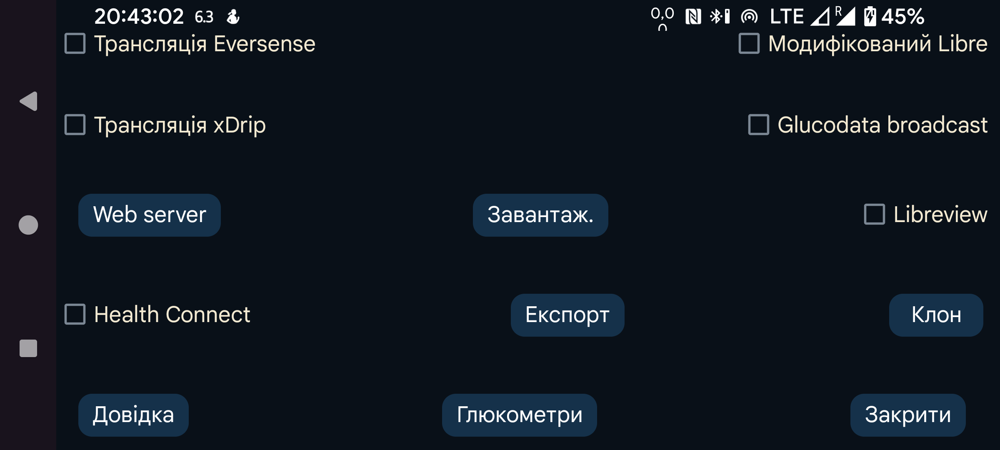

ar de es hi it ja nl pl ru tr uk uz en

Надсилати щохвилинні значення глюкози до Health Connect. Іншим програмам можна надати доступ до цих значень, наприклад Google Fit. Своєю чергою інші програми можуть отримувати ці дані з Google Fit.
Підключіться до LibreView, щоб надсилати туди значення глюкози й записи FreeStyle Libre 2 і 3, а також отримувати ID облікового запису, використаний під час активації датчика FreeStyle Libre 3. Торкніться, щоб змінити налаштування.
Із самою трансляцією Patched Libre усе гаразд, але xDrip змінює значення, коли отримує їх через цю трансляцію. Оскільки користувачі застосовують її лише в такий спосіб, я планував вилучити цю трансляцію.
xDrip не змінює значення, отримані через трансляцію EverSense або коли вебсервер Juggluco використовується як джерело даних Nightscout.
Ще одна трансляція глюкози. Її можна використовувати для щохвилинного надсилання значення глюкози до xDrip. У xDrip потрібно вибрати «640G/EverSense» як Апаратне джерело даних.
xDrip проігнорує майже всі значення через жорстке обмеження — одне значення на 5 хвилин. Це обмеження можна вилучити, змінивши вихідний код xDrip. Замініть 4 * 60 * 1000 на 55 * 1000 у файлі app/src/main/java/com/eveningoutpost/dexdrip/models/BgReading.java, щоб код мав вигляд:
public static BgReading readingNearTimeStamp(long startTime) {
long margin = (55 * 1000);
return readingNearTimeStamp(startTime, margin);
}
Перевага над трансляцією Patched Libre полягає в тому, що xDrip не перетворює значення глюкози невизначеним способом.
Надсилає таку саму трансляцію, як параметр xDrip «Налаштування→Налаштування взаємодії програм→Локальна трансляція». Її приймають програми на кшталт AndroidAPS. На відміну від оригінальної трансляції xDrip, що надсилалася кожні 5 хвилин, Juggluco надсилає її щохвилини, якщо датчик теж передає значення щохвилини.
Нова трансляція з тією самою функцією, що й трансляція xDrip. Просту демонстраційну програму, яка записує отримані значення глюкози в logcat, можна знайти тут: Трансляції глюкози. Якщо в G-Watch вибрано Juggluco як джерело даних, цю трансляцію потрібно ввімкнути.
Показано програми, які слухають цю трансляцію. Позначте програми, яким потрібно її надсилати.
Вебсервер, який можна використовувати з годинниками xDrip і деякими програмами Nightscout. Раніше називався вебсервером xDrip.
Завантажувати дані на сервер Nightscout.
Надсилає всі дані через інтернет-з’єднання до іншого екземпляра Juggluco, створюючи клон Juggluco на іншому пристрої. Наявні дані буде перезаписано.
Зберігати дані у файл.